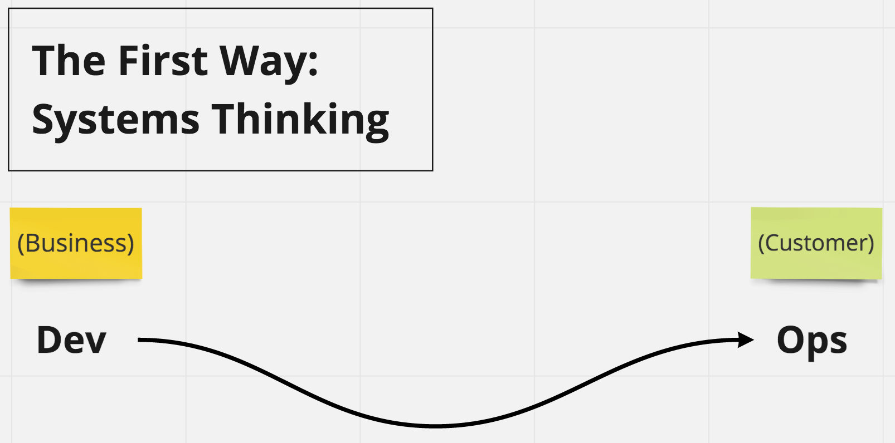
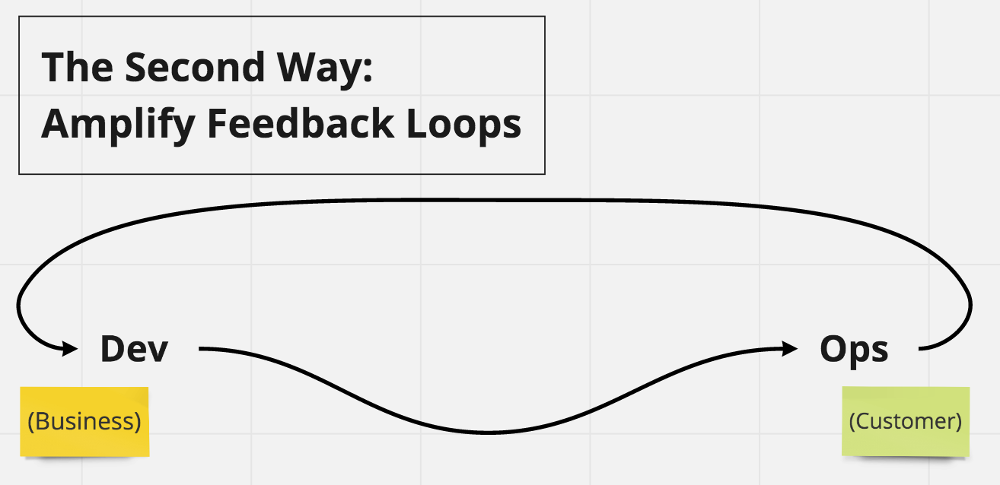

The Three Ways!

The First Way
Systems Thinking
Value Streams
From Requirements to shipped software to customers!

Assessment on the Performance of the entire system
How much time it takes do deploy a new line of code?
-
It allows to apply Lean principles
- Monitor WIP
- Cycle Time
- Lead Time
- Mean-Time-To-Repair (MTTR): elapsed time to repair a configuration item or IT service.
- Mean-Time-Between-Failure (MTBF): elapsed time between a service gets up and down.
- Mean-Time-To-Restore-Service (MTRS): elapsed time from the detection of an incident until it gets up.
Focus is on all business value streams enabled by IT
Speed is THE Business Competitive Advantage!
Minimize WIP to reduce company's investment before ROI!
The outcomes of putting the First Way into practice include:
- never passing a known defect to downstream work centers
- never allowing local optimization to create global degradation
- always seeking to increase flow
- always seeking to achieve profound understanding of the system
The Second Way
Amplify Feedback Loops

Understanding and responding to all customers, internal and external
Shortening and amplifying all feedback loops
Embedding knowledge where you need it
Eradicate largest sources of unplanned work
The Third Way
Culture of Continuous Experimentation And Learning

Creating a culture that fosters two things:
- Continual experimentation, which requires taking risks and learning from success and failure
- Understanding that repetition and practice are the prerequisites to mastery, reinforcing a culture of operational rigor and discipline
The outcomes of the Third Way include:
- allocating time for the improvement of daily work
- creating rituals that reward the team for taking risks
- introducing faults into the system to increase resilience
There’s a school of thought that says how high performers win in the marketplace is because they out-learn the competition, or as Andrew Shafer said:
You’re either a learning organisation or you’re losing to somebody who is.